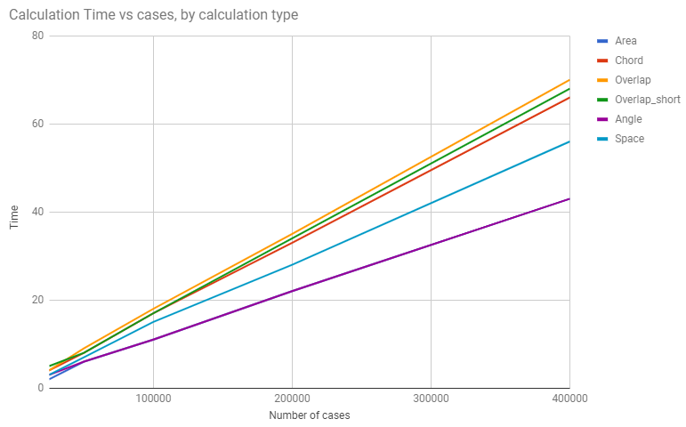
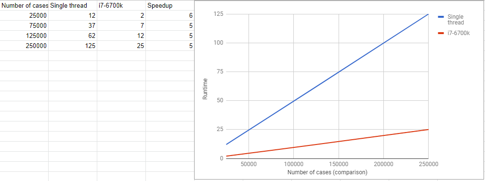

Different calculation modes have different levels of performance. They all scale with the number of runs and threading resource available.

The implant Monte Carlo engine is derived from the multi-layer system, but works slightly differently. On a quad-core i7-6700k, it processes 25000 iterations/second (250k cases in ~ 10 seconds, for 90 corner segments), on Windows.
Performance on Mac and Linux/GTK is generally comparable with that on Windows (at most, 10% worse). The performance gap was closed with the move to .NET Core 3.1, avoiding the performance issues apparent in the Mono framework used in earlier releases.
Runtime is essentially linear with the number of cases, for both single and multi-threaded modes. Multithreaded provides a significant boost in performance and is the only mode enabled in the GUI.

Runtime also scales linearly with the number of layers involved in the calculation, independent of the layer configuration. Area runtimes are below for 250k cases using the average overlay project.
Memory is aggressively held under control through the Garbage Collector. Each result, assuming no SVG is created, needs 1.5 KB RAM to be stored during a run. SVG greatly increases this.